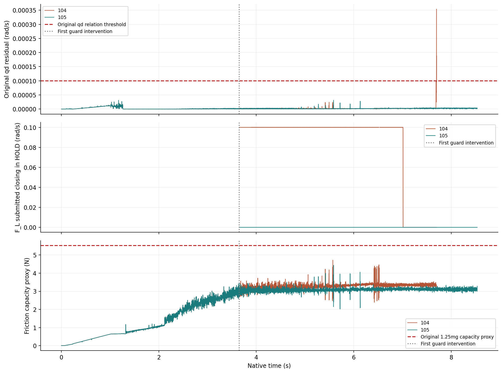
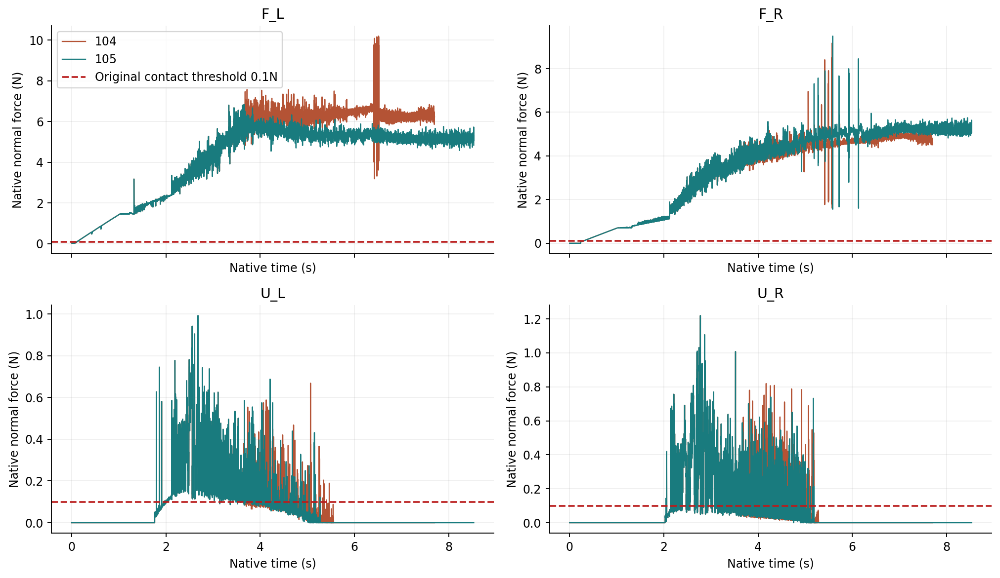

104 · top
原生时戳0–7.7000s；全部原帧保留。
SIMULATION · PAIRED CONTROLLER DIAGNOSTIC · 12 OCTOBER 2026
修复HOLD提交滞后，在同一初态和原安全门槛下保留完整失败并进行配对验证。
原URDF位置/速度关系与原物理诊断通过8192步；四手稳定夹持和完整任务仍未通过。学习System 0关闭，正式留出0。
105完成8192个原生物理步（8.5333s），原URDF位置与速度关系、原物理门槛、全部50个独立电机努力和反馈目标审计通过。改变策略前的3488步、全部164字段逐字节与104一致；77个物理参数和13个初态字段与98一致。完整四手任务仍未通过。
104在HOLD标签下仍继续提交闭合目标，并在7.7s结束的窗口触发原速度关系失败。只让守卫目标以实际提交命令为起点，是否消除这条命令缺陷，并保持原模型约束？本研究仅检验这一已知初态，不能给出泛化安全结论。
保持960Hz物理、60Hz控制、FIFO6、16次原生追加求解、8192事件容量和观察上限、0.10rad/s目标滤波速率，以及原质量、惯性、关节与接触门槛。HOLD保持上一实际提交目标；RELAX从该目标退回；JOINT_GUARD退回受保护组并保持另一组；SEEK保持原流程。不修改q/qd，不放宽1e−4原位置/速度关系门槛。
1次原生执行，运行完成后审计；原失败判据与全16步控制周期的保留规则不变。前瞻冻结协议 · 全部前缀字段证据 · 完整登记与源SHA。
1个已选择的开发初态、2种命令策略；新增随机物理任务0、正式独立留出0。15584个相关时间步不是15584个独立试验。手部单一夹持轨迹没有覆盖四臂的完整50维操作空间；不报告成功率置信区间。500个软件进度抽样与29312个配对命令回放用于命令不变量，不计入物理安全样本。学习System 0关闭。
| 版本 | 策略 | 实际/计划步 | 最大qd残差 rad/s | 模型诊断 | 四手连续接触 | 完整任务 |
|---|---|---|---|---|---|---|
| 104 | 名义进度守卫 | 7392/8192 | 0.00035395566 | 原模型失败 | 0.09375s | 未通过 |
| 105 | 实际提交目标守卫 | 8192/8192 | 3.1389296e-05 | 通过 | 0.09375s | 未通过 |


104左前手3872个HOLD物理步中3211步继续提交闭合；105左前手4688个HOLD物理步中继续闭合0次。原生105未触发RELAX或JOINT_GUARD；其回退行为只通过软件回归与记录输入回放，不宣称物理分支验证完成。
守卫的6/8N阈值是60Hz反馈策略设置，不是物理力上限。全部960Hz物理步的峰值与控制采样力分别记录；原物理接触上限30N另行审计。命令与观测分母 · 所有手部、预抬起和最终状态。
104与105各有俯视、正视、侧视、全景。104原有视频和失败帧保持不变；105为新原生相机帧。末帧仅显示约0.067s，不增加物理事件。
原生时戳0–7.7000s；全部原帧保留。
原生时戳0–7.7000s；全部原帧保留。
原生时戳0–7.7000s；全部原帧保留。
原生时戳0–7.7000s；全部原帧保留。
原生时戳0–8.5333s；全部原帧保留。
原生时戳0–8.5333s；全部原帧保留。
原生时戳0–8.5333s；全部原帧保留。
原生时戳0–8.5333s；全部原帧保留。
全部原帧SHA、实际时戳及视频PTS。相机源点投影审核通过，不代表所有接触点无遮挡。
104的第7388步原速度关系违例和其后完整控制周期均保留。105消除了已观察到的HOLD提交滞后，但四手连续接触仍只有0.09375s，低于原0.25s；预抬起、实际抬升、搬运、放置、释放和退出未通过。上方两手在104仅拇指末节产生接触，末态均无有效载荷接触；几何原因尚未证实。
原生RELAX与JOINT_GUARD分支、完整四臂空间、新随机任务、感知不确定性故障及真实学习System 0的对照验收均未完成。上方接触定位 · 全部时长对照与失败报告。
原九项要求逐项状态保持不变。本次“原模型与物理诊断通过”不升级为完整安全验收。当前机器人配置仍是开发诊断配置，规范目标配置尚未联合通过；被动碰撞烹饪查询没有得到有效形状证书，代理间隙与已观测接触不能替代完整碰撞形状证明。
| 项 | 要求 | 原状态 |
|---|---|---|
| holding | 回退保持在原始非零速度和延迟下持续安全 | DEVELOPMENT_LONG128_PASS_FORMAL_PENDING |
| effective_motion | 保留操作意图并有实际四臂运动 | FAIL |
| random_support | 强随机、大范围操作空间与定向危害覆盖 | PARTIAL_DEVELOPMENT_FULL50_IID_INPUTS_NATIVE_AND_FAULT_STRATA_PENDING |
| frozen_generalization | 科学规范的冻结协议、独立多种子、留出与不确定性报告 | NOT_ACCEPTED |
| objects | 物体位置、姿态、大小、速度、可达性进入明确规划与安全输入 | PARTIAL_SOFTWARE_OBJECT_INPUT_CONTRACT_NATIVE_AND_ACTOR_INTEGRATION_PENDING |
| grasp | 真实物理夹持、抬升、搬运、放置和释放 | FAIL_LOADED_ORIGINAL_MODEL_FULLTASK_CANONICAL_AND_FORMAL_PENDING |
| cooperative_task | 真实四臂共同任务且有安全与不安全的同输入对照 | FAIL_LOADED_ORIGINAL_MODEL_FULLTASK_CANONICAL_AND_FORMAL_PENDING |
| native_oracle | 完整原生观测和独立危害判据，无漏测或单看画面 | FAIL_LOADED_ORIGINAL_MODEL_FULLTASK_CANONICAL_AND_FORMAL_PENDING |
| visual_delivery | 网页可审阅的安全对照、完整视角和证据归档 | FAIL_LOADED_ORIGINAL_MODEL_FULLTASK_CANONICAL_AND_FORMAL_PENDING |
原九项原文、状态与全部门槛。后续先处理上方夹持位置与真实持续接触，再执行完整任务；固定合格模型和策略后才能进入全空间随机银行与学习System 0正式留出。
15584步逐步指标CSV · 105独立终局判定 · 实际审计退出记录 · 自有方法、独立审计、软件测试与原URDF代码包 · 方法源SHA映射。
105完整原始输出分包下载，全部分包共同构成完整数据；每个原文件的SHA与大小。104完整原始包沿用已发布清单，不重复复制。
方法包包含可读自有实现与原始数据核验入口。重跑原生实验仍需登记SDK及机器人资产；已安装原生求解内核源码未知，不保证不同SDK/设备逐字节复现。
报告组织参考Anonymous embodied report、RoboDojo report、Awesome Astra Embodied AI；未移用其结果或成功率。